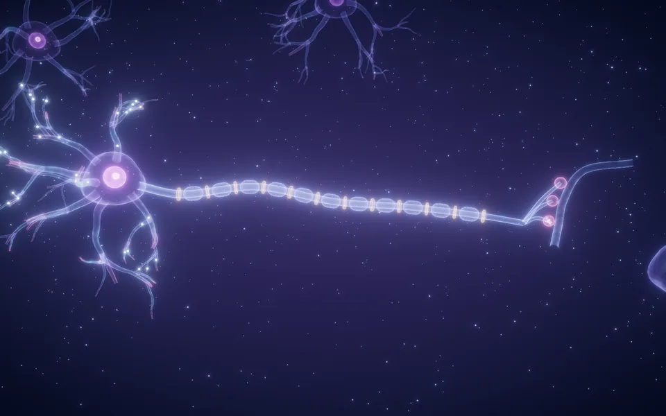

Xung thần kinh đi như thế nào?
Kịch bản theo phút, phiếu học tập một trang A4 và đáp án cho bài 3D Neuron và xung thần kinh. Đọc 10 phút là dạy được. Phút dự kiến và việc của giáo viên từng bước cũng hiện trên màn hình giáo viên khi lên lớp.

Mở bài 3DBắt đầu trong 10 phút
Những gì cần biết trước khi vào lớp. Trang này in ra được (nút In kịch bản).
Học sinh làm được
- Chú thích được các bộ phận của neuron và nói được chức năng của từng bộ phận.
- Vẽ được dáng đồ thị điện thế màng khi một xung đi qua: nghỉ, vượt ngưỡng, đỉnh, trở về.
- Giải thích được vì sao xung đi nhanh hơn trên sợi trục có bao myelin.
- Sắp xếp đúng các sự kiện truyền tin qua synapse hoá học, và dùng nó để giải thích tác dụng của thuốc tê.
Chuẩn bị
- Máy tính có Chrome hoặc Edge bản mới, nối máy chiếu. Bài dùng hiệu ứng phát sáng, nên chạy trang Kiểm máy trên chính máy này trước buổi dạy.
- Mở bài một lần trước giờ học. Bài chưa có bản offline: mở lúc còn mạng và giữ nguyên tab.
- Mỗi bước là một cảnh ngắn khoảng 5 giây, tự dừng ở cuối cảnh. Muốn xem lại, bấm lại bước đó trong danh sách bước hoặc nút “Xem lại từ đầu”.
- In phiếu học tập: mỗi học sinh một tờ, hoặc mỗi cặp một tờ.
- Học sinh: Bút. Không cần máy tính hay điện thoại.
Năm bước lên lớp
- Mở bài, bấm Lên lớp trên thanh đầu bài (hoặc phím Shift P). Mỗi lần chuyển bước, cảnh tương ứng chạy khoảng 5 giây rồi dừng để giáo viên giảng.
- Phím Space phát hoặc dừng cảnh. Bảng điện thế màng ở góc phải cho số đo theo thời gian thực.
- Menu Thêm → Màn hình giáo viên: cửa sổ này hiện phút dự kiến, việc cần làm, câu hỏi và đáp án của từng bước. Hoặc quét mã để dùng điện thoại làm điều khiển.
- Chuyển bước bằng bút trình chiếu, phím mũi tên, hoặc nút trên điện thoại. Phím B làm màn đen khi học sinh vẽ, viết vào phiếu.
- Làm theo cột Giáo viên của kịch bản. Đồng hồ trên màn hình giáo viên chuyển màu cam khi bước đang chậm so với dự kiến.
Khi gặp sự cố
| Cảnh giật, chậm | Bài tự chuyển sang chế độ nhẹ khi máy yếu. Có thể mở sẵn bằng cách thêm ?lite=1 vào cuối địa chỉ. Đóng các tab khác. |
|---|---|
| Cảnh đã dừng, muốn xem lại | Bấm lại bước đó trong danh sách bước, hoặc nút Xem lại từ đầu ở giữa màn hình. Phím Space phát hoặc dừng. |
| Phòng không có mạng | Bài chưa có bản offline. Mở bài lúc còn mạng và giữ nguyên tab; cảnh đã tải xong vẫn chạy khi mất mạng. |
| Điện thoại không nối được | Cả máy tính và điện thoại cần Internet. Nếu mạng trường chặn, dùng bút trình chiếu hoặc phím mũi tên; màn hình giáo viên dạng cửa sổ thứ hai không cần mạng. |
| Cửa sổ giáo viên không mở | Trình duyệt chặn cửa sổ bật lên: bấm biểu tượng ở thanh địa chỉ, cho phép cửa sổ bật lên rồi thử lại. |
Kịch bản 45 phút
Bốn hoạt động theo mạch dự đoán, quan sát trên cảnh 3D, giải thích. Mỗi dòng là một bước trên màn chiếu; phút là gợi ý, giáo viên chủ động co giãn.
1. Mở đầu
0–4′Từ phản xạ rụt tay quen thuộc, đặt câu hỏi tín hiệu đi trong cơ thể bằng cách nào.
2. Hình thành kiến thức
4–36′Theo một xung thần kinh: cấu tạo neuron, điện thế màng, dẫn truyền nhảy cóc, synapse.
3. Luyện tập
36–40′Sắp xếp các sự kiện truyền tin qua synapse.
Tiếp nối bước trên, không cần chuyển màn chiếu.
4. Vận dụng
40–45′Giải thích vì sao thuốc tê làm mất cảm giác đau.
Tiếp nối bước trên, không cần chuyển màn chiếu.
Phiếu học tập
Một trang A4, in đen trắng được. Mỗi học sinh một tờ hoặc mỗi cặp một tờ.
Xung thần kinh đi như thế nào?
Ghi tên bộ phận ứng với mỗi chữ cái.
Vẽ điện thế màng ở một điểm trên sợi trục khi xung đi qua: nghỉ, vượt ngưỡng, đỉnh, trở về.
Đánh số 1 đến 5 theo đúng thứ tự xảy ra.
| Sự kiện | Thứ tự |
|---|---|
| Chất dẫn truyền gắn vào thụ thể ở màng sau synapse | |
| Xung thần kinh tới chuỳ synapse | |
| Túi chứa chất dẫn truyền hoà vào màng trước, giải phóng chất dẫn truyền vào khe synapse | |
| Ca²⁺ đi vào chuỳ synapse | |
| Tín hiệu xuất hiện ở neuron kế tiếp |
Đáp án và gợi ý chấm
Theo số mục trên phiếu. Câu hỏi trên màn chiếu có đáp án ngay trong màn hình giáo viên.
- 1
- Ý đúng: tín hiệu điện (xung thần kinh) chạy dọc các neuron, từ neuron này sang neuron khác. Chấp nhận “dây thần kinh truyền tín hiệu”; chưa cần đúng thuật ngữ.
- 2
- A. sợi nhánh; B. thân neuron (có nhân); C. sợi trục; D. bao myelin; E. eo Ranvier; F. chuỳ synapse.
- 3
- Đoạn nằm ngang ở −70 mV; tăng dần tới ngưỡng khoảng −55 mV; vọt lên đỉnh khoảng +30 mV; hạ nhanh xuống, có thể thấp hơn −70 mV một chút rồi trở về −70 mV. Cả quá trình chỉ vài mili giây.
- 4
- Theo thứ tự các dòng trên phiếu: 4 – 1 – 3 – 2 – 5. Tức là: xung tới chuỳ → Ca²⁺ vào chuỳ → túi giải phóng chất dẫn truyền → chất dẫn truyền gắn thụ thể → tín hiệu ở neuron kế tiếp.
- 5
- Kênh Na⁺ bị chặn nên điện thế hoạt động không phát sinh và không lan truyền dọc sợi trục cảm giác ở vùng tiêm; tín hiệu đau không về tới não nên không thấy đau. Đạt khi nêu được “xung bị chặn, không truyền về não”.
- Màn chiếu
- Bốn câu trong bài: sợi nhánh nhận tín hiệu; xung xuất hiện khi điện thế màng vượt ngưỡng khoảng −55 mV; xung nhảy cóc qua các eo Ranvier; chất dẫn truyền được giải phóng từ các túi ở chuỳ synapse.
Yêu cầu cần đạt và nguồn
Yêu cầu cần đạt
Sinh học 11 › Sinh học cơ thể › Cảm ứng ở động vật › Cơ chế cảm ứng ở động vật có hệ thần kinh. Trích nguyên văn Chương trình GDPT 2018.
- Dựa vào hình vẽ, nêu được cấu tạo và chức năng của tế bào thần kinh.
- Dựa vào sơ đồ, mô tả được cấu tạo synapse và quá trình truyền tin qua synapse.
- Vận dụng hiểu biết về hệ thần kinh để giải thích được cơ chế giảm đau khi uống và tiêm thuốc giảm đau.
Nguồn
- OpenStax, Anatomy and Physiology 2e, mục 12.4 The Action Potential (CC BY 4.0): điện thế nghỉ khoảng −70 mV, ngưỡng khoảng −55 mV, đỉnh khoảng +30 mV, dẫn truyền nhảy cóc.
- OpenStax, Anatomy and Physiology 2e, mục 12.5 Communication Between Neurons (CC BY 4.0): Ca²⁺ vào chuỳ synapse, túi giải phóng chất dẫn truyền, thụ thể màng sau.
- Azevedo FAC và cs., J Comp Neurol 2009;513:532–541: khoảng 86 tỉ neuron trong não người.
- Sheets PL, Jarecki BW, Cummins TR. Br J Pharmacol 2011;164(2b):719–730: thuốc tê tại chỗ như lidocaine chặn kênh Na⁺ phụ thuộc điện thế, ngăn điện thế hoạt động lan truyền.
- Yêu cầu cần đạt trích nguyên văn Chương trình môn Sinh học 2018 (Thông tư 32/2018/TT-BGDĐT).
- Cảnh 3D là hình minh hoạ dựng bằng mã, không theo tỉ lệ.
Nội dung viết mới, không chép sách giáo khoa; dùng chung được cho cả ba bộ sách vì bám theo chương trình.